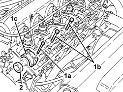
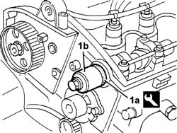

1036B36 Front camshaft OIL SEAL - R.R. with timing belt removed
- Path
- Procedures > 10 ENGINE > 1036 TIIMING SYSTEM > 1036B CAMSHAFT (1) IN CYLINDER HEAD (1) > 1036B36 Front camshaft OIL SEAL - R.R. with timing belt removed
- Kind
- repair procedure (removal / refitting; the operation number is the code)
- Applies to
- engines: 2.4 JTD 10V; all production periods
- Interactive page
- https://sloeber94.github.io/elrnDB-lThss/en/#/98698
Applies to: all engines; all production periods
 Removing
Removing
 Refitting
RefittingSee in Op. 1016A20
See in Op. 1032B40
1. Undo the bolt (1a) fixing the cap, undo the fixing bolts (1b) and gently lift the camshaft bearing lubrication pipe, then remove the cap (1c).
2. Remove the camshaft oil seal.

Applies to: all engines; all production periods
Refitting
Removing- Fit the camshaft cap.
- Tighten the bolts fixing the cap and the lubrication pipe.
- Tighten the bolts fixing the caps to torque.
 | Value - daNm | Fastening | Component | Ø |
|---|---|---|---|---|
. | 1.5 | Bolt | CAMSHAFT CAPS | M7 |
1. Fit the new oil seal (1b) on the camshaft using the tool (1a).
 | Description | Code | Function |
|---|---|---|---|
1a | Fitting tool | 1.860.824.000 | Tool for fitting crankshaft front oil seals |

Applies to: all engines; all production periods
See in Op. 1032B40
See in Op. 1016A20